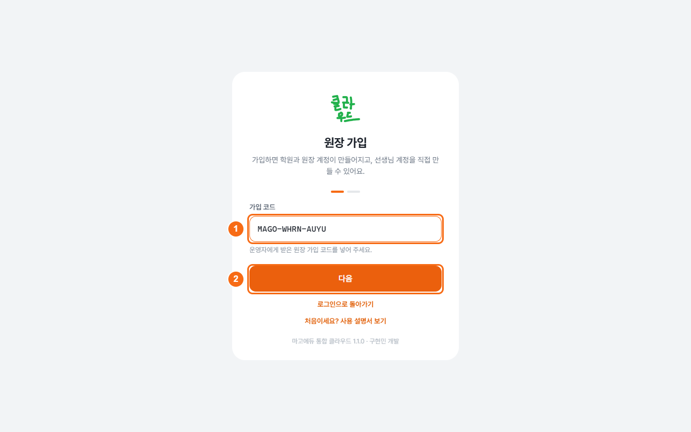
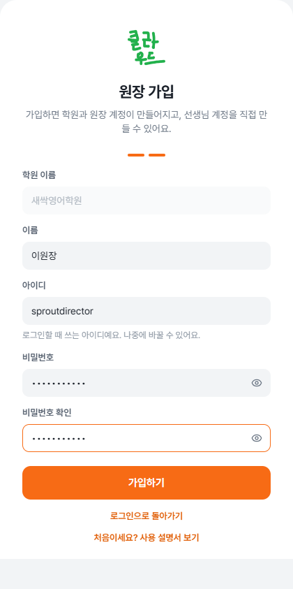
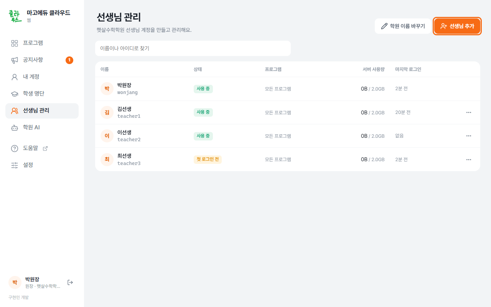
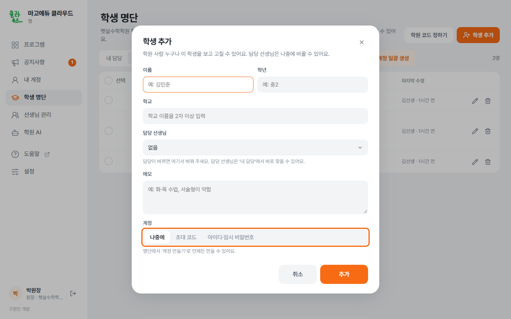
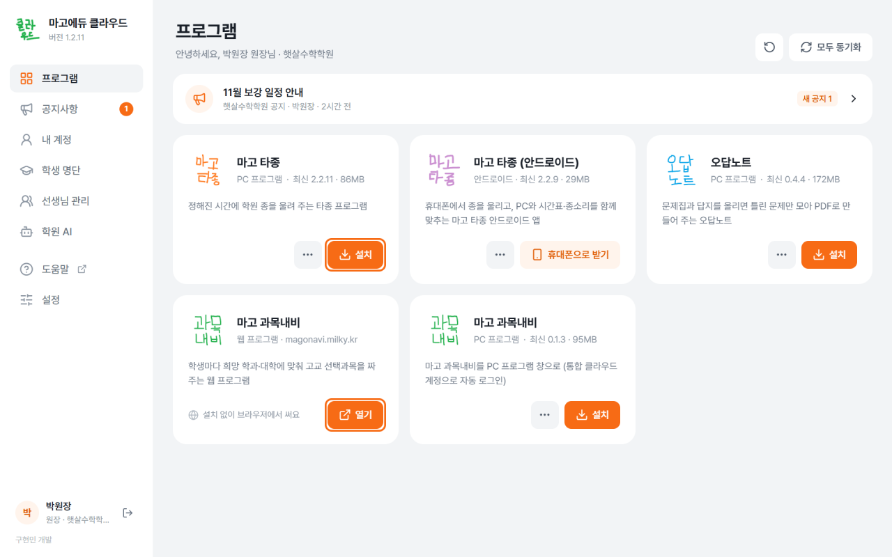
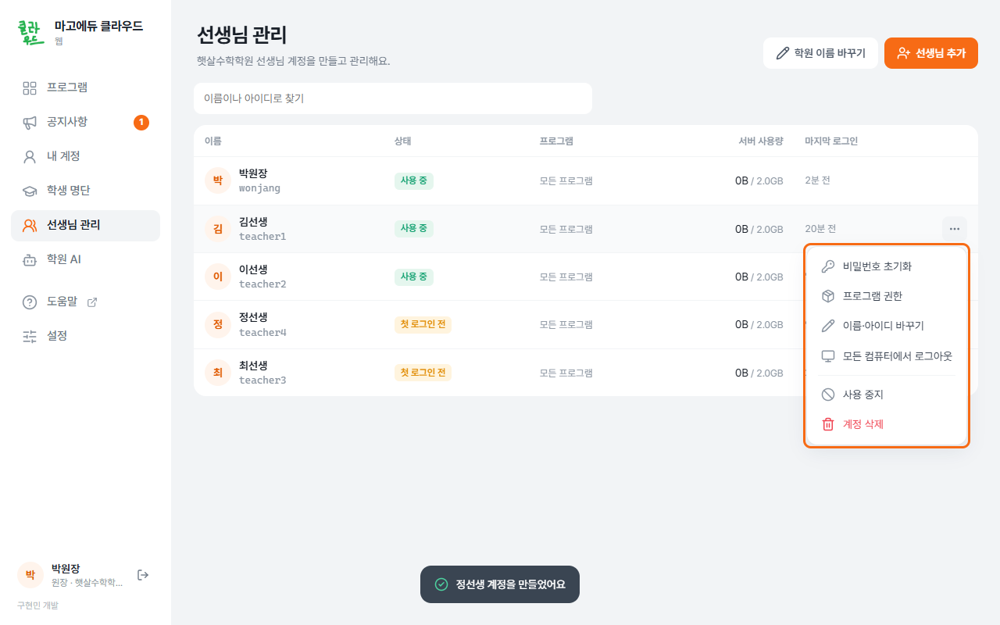

원장님, 여기서 시작해요
처음에는 학원과 계정을 준비해요. 준비가 끝나면 필요한 프로그램만 열어 쓰면 돼요.
처음 한 번 준비하기
- 가입 코드로 학원을 만들어요.
운영자에게 원장 가입 코드를 받아요. mago.milky.kr에서 원장 가입 코드가 있어요를 누르고, 코드를 넣어 다음을 눌러요.

주황 테두리의 가입 코드 칸에 받은 코드를 넣어요. 학원 이름·이름·아이디·비밀번호를 적고 가입하기를 눌러요. 예를 들어 학원은 햇살수학학원, 이름은 박원장, 아이디는 wonjang처럼 정해요.

주황 테두리의 가입 정보를 채우고 가입하기를 눌러요. - PC에 통합 클라우드를 설치해요.
웹의 Windows 프로그램 내려받기 또는 앱 내려받기로 설치 파일을 받아요. 설치한 앱에 방금 만든 아이디로 로그인해요. 설치 순서 보기
- 선생님 계정을 만들어요.
→ 선생님 추가를 눌러요. 이름·아이디·쓸 수 있는 프로그램을 정하고 만들기를 눌러요.

주황 테두리의 선생님 추가에서 새 계정을 만들어요. 만들어진 아이디와 임시 비밀번호를 해당 선생님에게 전달해요. 선생님은 첫 로그인 때 자기 비밀번호로 바꿔요. 선생님 계정 자세히 보기
- 학생 명단과 학생 계정을 준비해요.
→ 학생 추가에서 이름·학교·학년·담당 선생님을 적어요. 계정은 초대 코드 또는 아이디·임시 비밀번호로 만들 수 있어요.

주황 테두리에서 나중에·초대 코드·아이디·임시 비밀번호 중 하나를 골라요. 여러 명에게 한꺼번에 계정을 만들려면 먼저 학원 코드 정하기를 해 주세요. 학생 추가에서 아이디·임시 비밀번호를 고를 때도 학원 코드가 필요해요. 학생 계정 두 방식과 일괄 생성
- 필요하면 학원 AI를 정해요.
에서 함께 쓸 AI를 정해요. AI는 글자와 문제를 읽는 일을 돕는 선택 기능이에요. 준비가 안 됐다면 나중에 해도 돼요. 학원 AI 준비하기
- 필요한 프로그램을 설치하고 열어요.
PC 앱의 에서 원하는 카드의 설치를 눌러요. 끝나면 열기를 눌러요.

주황 테두리의 설치·열기가 프로그램을 시작하는 버튼이에요.
자주 하는 일
선생님 비밀번호·사용 권한 관리
에서 해당 선생님 줄의 점 세 개(⋯)를 눌러요.

- 비밀번호 초기화: 새 임시 비밀번호를 전달해요. 선생님은 다시 로그인한 뒤 바꿔요.
- 사용 중지: 그 계정으로 로그인하지 못하게 해요. 다시 쓸 때는 다시 사용하게 하기를 눌러요.
- 프로그램 권한: 선생님이 쓸 프로그램을 고르고 저장해요.
학원 공지 올리기
→ 공지 쓰기에서 제목·내용·보여 줄 기간을 정하고 올리기를 눌러요. 공지 자세히 보기
학생이 들어오거나 담당이 바뀌었을 때
에서 추가하거나 고쳐요. 잘못 지운 학생은 → 되살리기로 돌려놓아요. 화면에 표시된 보관 기간이 지나기 전에 해 주세요. 학생 명단 관리